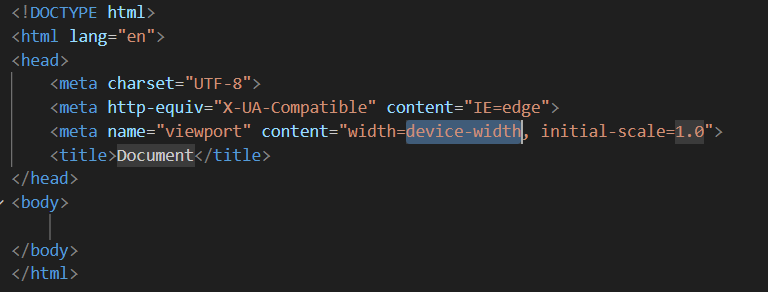
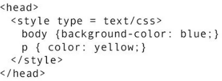
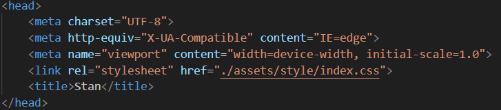
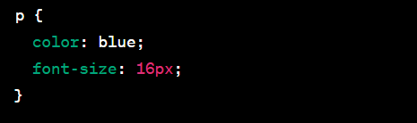

I just completed my first week of my Software Development Course using HTML and CSS. I am excited to explain step by step, using the Feynman Technique , what I have learnt so far from a beginner’s view. Enjoy.

VS

HTML
What is HTML?
HTML stands for Hypertext Markup Language. It is the standard markup language used in the creation of websites.
Why use HTML?
- Structure and Semantics
- Browser Compatibility
- Integration with CSS and JavaScript
- Ease of Learning and Use
HTML provides a structured way to organize content on the web. It uses tags to define different elements such as headings, paragraphs, lists, images, and links. These tags give meaning and structure to the content, making it easier for both humans and search engines to understand.
HTML is supported by all modern web browsers, making it a universal language for creating web pages. Whether you're using Chrome, Firefox, Safari, or any other popular browser, they all understand and render HTML code.
HTML works seamlessly with CSS (Cascading Style Sheets) and JavaScript. CSS allows you to control the presentation and visual styling of HTML elements, while JavaScript enables dynamic and interactive functionality on web pages. HTML, CSS, and JavaScript together form the core technologies for building modern websites.
HTML has a relatively simple syntax and is easy to learn, especially for beginners. It doesn't require extensive programming knowledge to get started. With a basic understanding of HTML tags and attributes, you can quickly create and publish web content.
How Does HTML Work?
HTML utilises the Box Model Concept where different elements are placed in different boxes and the boxes placed in bigger boxes to create the final piece.
In explaining how HTML works, we will focus on the structure of the HTML document, Tags and Elements Used, Attributes, Content, The Document Object Model and Rendering.
- Structure
- Tags and Elements
- Attributes
- Content
- Document Object Model (DOM)
HTML documents are structured using a tree-like hierarchy of elements. The root element is typically "html", which contains two main sections: "head" and "body". The "head" section contains metadata about the document, such as the title, character encoding, and links to external stylesheets or scripts. The "body" section contains the visible content of the web page.
HTML tags define different elements or components of a web page. Tags are enclosed in angle brackets (< >) and come in pairs: an opening tag and a closing tag. The opening tag indicates the start of an element, while the closing tag marks its end.Examples of tags include: the "p" tag and the "div" tag.
HTML tags can also include attributes, which provide additional information about an element. Attributes are added within the opening tag and consist of a name-value pair. For example, the tag has attributes like src (specifying the image source)
The content of an HTML element is placed between its opening and closing tags. It can be text, other nested elements, or a combination of both.
The DOM is the entire HTML document with its different elements known as nodes. It is loaded onto the web browser which renders it to a webpage.
CSS
What is CSS?
CSS Stands for Cascading Style Sheet.
It is a markup language used to add style to the HTML document. It is responsible for making the web page visually appealing and also helps in responsiveness; which makes the webpage compatible on different devices.
Why Use CSS?
- Separation of Concerns
- Visual Consistency
- Flexibility and Control
- Integration with HTML and JavaScript
CSS allows you to separate the presentation layer (styles and layout) from the structure and content of a web page (HTML). This separation of concerns improves the maintainability and scalability of web projects. With CSS, you can make changes to the visual appearance of a website without modifying the underlying HTML structure.
CSS provides a consistent and unified way to define the visual styles across multiple web pages or an entire website. By using CSS, you can create a single stylesheet that controls the appearance of various elements throughout your site, ensuring a consistent look and feel.
CSS offers a wide range of styling options and properties to customize the visual presentation of HTML elements. You can control attributes like colors, fonts, sizes, margins, padding, borders, backgrounds, and more. CSS provides precise control over the layout, positioning, and responsiveness of elements, enabling you to create visually appealing and responsive designs.
CSS seamlessly integrates with HTML and JavaScript. HTML provides the structure, JavaScript adds interactivity, and CSS controls the visual presentation. By combining these technologies, you can create dynamic and interactive web pages with enhanced user experiences.
How Does CSS work?
CSS styling can be done; Inline, Internal or External.
In Inline, the style attribute is added to the element in the HTML document.
In internal, the style is embedded in the head tag.
In External, the link to the CSS document containing all the styles is embedded in the head tag. External Styling is the best option as it ensures Separation of Concerns which ensures an efficient coding experience.
 In further explanation of how CSS works, we will focus on the different components of the CSS:
Selectors, Declaration and the Rule Set
- Selectors
- Declarations
- Rule Sets
CSS selectors determine which HTML elements the styles should be applied to. Selectors can target elements based on their type (e.g., p for paragraphs), class (e.g., .my-class), ID (e.g., #my-id), attributes, and more.
CSS declarations define the styles and properties that should be applied to the selected elements. Declarations consist of a property and a value pair. For example, color: blue sets the text color to blue, and font-size: 16px sets the font size to 16 pixels. Multiple declarations are separated by semicolons.
CSS rules are created by combining selectors and declarations. A rule set consists of a selector followed by a set of declarations enclosed in curly braces. For example:
Once the browser receives the HTML and the associated CSS, it analyses the HTML structure and applies specific styles to each element accordingly, hence displaying the content with the specified visual formatting.
In Summary
HTML and CSS can be distinguished by comparing them to constructing and painting a building. In this analogy, the building represents the HTML document, while the painting of the building represents the CSS. When constructing a building, there are two key aspects to consider: the structure and the aesthetic appeal. The structure defines the layout, rooms, and overall architecture, while the aesthetic appeal involves adding colors, patterns, and visual elements.Similarly, when building a website, HTML and CSS fulfill these respective roles. HTML represents the structure of the web page, defining the content, headings, paragraphs, images, links, and other elements. It organizes the information and establishes the foundation of the page, much like the construction of a building.On the other hand, CSS is responsible for the visual presentation and styling of the web page. It determines the colors, fonts, sizes, margins, borders, backgrounds, and layout. CSS adds the aesthetic touch to the HTML structure, making the web page visually appealing and engaging, just as painting does for a building.In summary, HTML and CSS have distinct roles in web development, much like constructing and painting a building. HTML provides the structure and content, while CSS enhances the visual appearance and style, making the website attractive and user-friendly.
Here is a simple design of a Webpage and its Code.